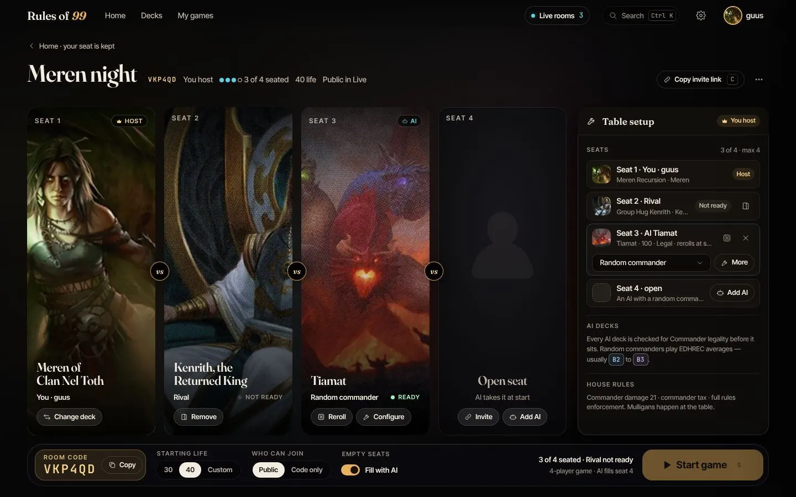

MTG suite
Four tools for Magic: The Gathering, all running on the homelab.
- Role
- Everything, in my spare time
- Period
- 2026
- Type
- Personal; one tool is open source
Context
Magic is the game I play most with friends, mostly the Commander format. When we couldn’t meet up I wanted a way to play online with real rules, and that turned into four tools: one to play, one to build decks, one to search for cards and one to brew decks with Claude.
They’re deployed on my homelab through the same GitOps setup as everything else. The tools are:
- Rules of 99: Commander in the browser
- Grimoire: a deck library and builder
- Scryfall, in plain words: card search in plain language
- claude-mtg-skills: Claude Code skills for decks

Rules of 99
Commander in the browser, for two to four players, with the rules enforced by an engine instead of by arguing.
- The open-source Forge rules engine runs headless on the server: all 33,000 cards, commander tax, commander damage and colour identity.
- A WebSocket gateway sends each player only what they’re allowed to see, so the other players’ hands never leave the server.
- Rooms have a six-character code and survive a dropped connection. Finished games can be replayed, and on a phone the table shows one board at a time.
Java, React, TypeScript, WebSockets, SQLite.
Home: continue with the last deck, or open a table with a room code. Table setup: two to four seats, each with its commander. The workbench: build and tune a deck, with instant search over every card. Replays: step back through a finished game. Card details, from anywhere in the app. On a phone, one board at a time.
Grimoire
A deck library and builder, with an MCP server so Claude can search the whole card pool.
- Card data in SQLite with full-text search, and exact colour-identity and legality filters.
- Each deck shows its mana curve, colour sources, categories and an estimate of its power bracket.
Node, SQLite with FTS5, MCP.
The library: every deck at a glance. The builder, with legality and colour identity checked. Analysis: mana curve, colour sources, categories and a bracket estimate. On a phone.
Scryfall, in plain words
Scryfall is the card search everyone uses, but its query syntax takes practice. Here you describe the cards you want, and you get a query that works.
- The Claude Agent SDK writes a query and tests it against Scryfall before showing it.
- It offers a stricter and a broader reading, each with a breakdown of what every part of the query means.
Claude Agent SDK, Node, server-sent events. The screenshots show the real interface with live Scryfall data.
A request in plain words, the query it became, and what each part means. On a phone.
claude-mtg-skills
Seven Claude Code skills that build, upgrade, rate and explain real decks, grounded in proven decklists and live prices. They install as a Claude Code plugin marketplace.
Open source under the MIT licence, with at least 95% test coverage. github.com/guuse/claude-mtg-skills
The plugin marketplace banner.
Results
- 4
- tools, all deployed on the homelab
- 2–4
- players per Rules of 99 table
- 7
- Claude Code skills in the public plugin
Trade-offs
- Rules of 99 vendors Forge at a pinned commit, and the card data is a separate pin that updates nightly. I control when the engine changes, but I have to bring in upstream fixes myself.
Stack
Java (Forge), React and TypeScript, Node, SQLite, WebSockets, the Claude Agent SDK and MCP, deployed with Argo CD on the homelab.